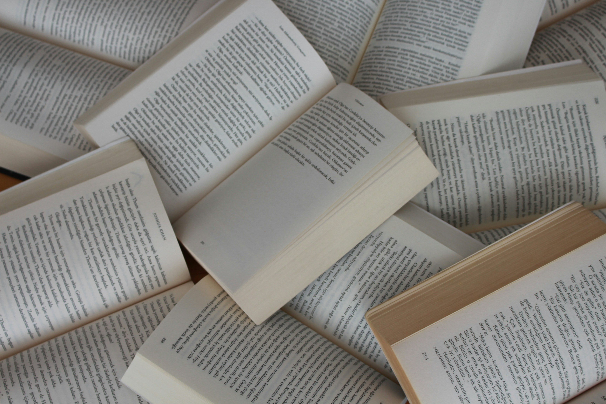

Welcome to My Bookshelf!

As you have probably already inferred from the name, this blog is basically a digital library. I have always enjoyed discussing the books I('ve) read. The idea to create a blog about the books I read came to me in 2021. But I officially began blogging in 2023. This blog isn't just a place for me to share and keep track of the books I have read and the ones I am currently reading. The reason why I created this blog is to share the joy of reading and encourage others to pick up books. This blog is not only for readers, it is for anyone and everyone. I hope we can enjoy this new chapter together!
Here's a quote: